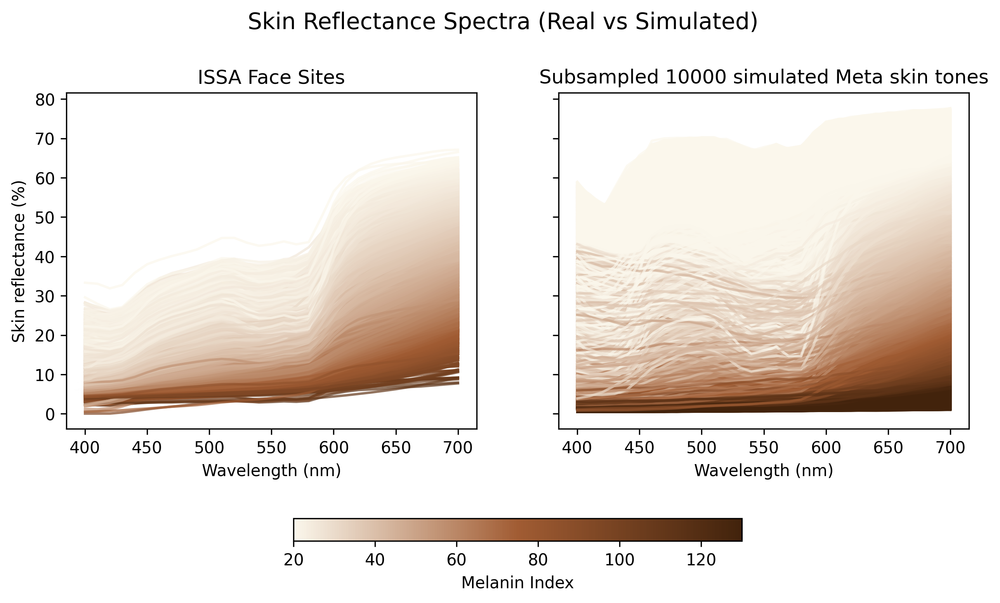
Skin Reflectance Spectra Filter
A filter to classifiy whether the Meta simulated skin reflectance spectra are realistic with respect to the ISSA dataset.
1 Overview of simulated and real skin reflectance spectra
Let us examine the ISSA skin reflectance spectra from face sites (including cheek, cheek bone, chin, ear lobe, forehead, nose tip), and the Meta simulated skin reflectance spectra in visible wavelengths.
2 Filter the simulated skin reflectance spectra based on the ISSA dataset
We establish some intepretable rules to determine whether a simulated skin reflectance curve is realistic.
2.1 Pointwise quantiles
At each wavelength, calculate the \(0.1\%\) and \(99.9\%\) quantiles (removing outliers) of ISSA spectra from face sites.
For any simulated skin spectra, filter it out if its reflectance at some wavelength lies outside the corresponding quantile range.
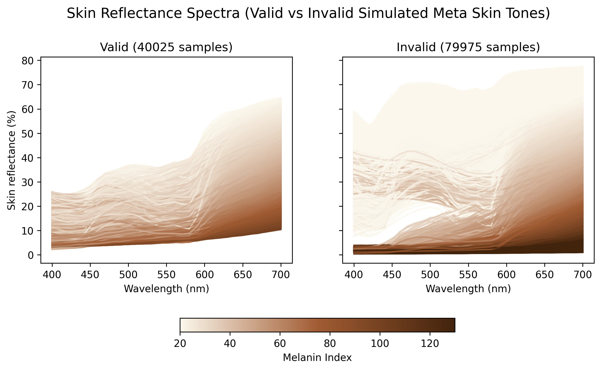
2.2 Conditional dependencies
Pick several anchor wavelengths. Here the anchor wavelengths are \([400, 500, 550, 600, 700]\) (nm).
For any pair of anchor wavelengths \(w_1<w_2\), run Gaussian process regression between skin reflectance at \(w_1\) and \(w_2\) of ISSA face sites.
Given a simulated skin spectra and a pair of anchor wavelengths \(w_1<w_2\), predict the \(99.5\%\) credible interval of skin reflectance at \(w_2\) conditional on the simulated skin reflectance at \(w_1\). Check whether the simulated skin reflectance at \(w_2\) lies inside the \(99.5\%\) credible interval.
Filter out the simulated skin spectra if its reflectance at some \(w_2\) lies outside the corresponding \(99.5\%\) credible interval. According to Bonferroni inequality, the false positive rate is under \(5\%\).
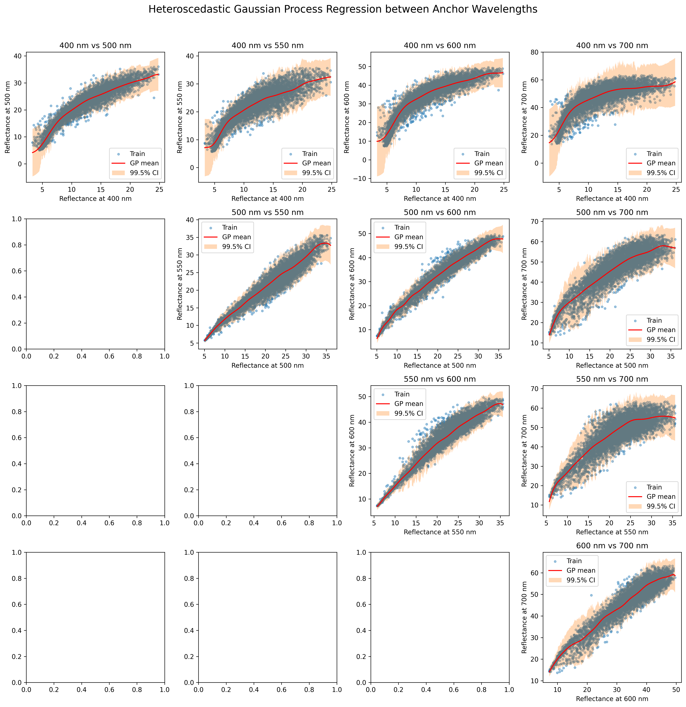
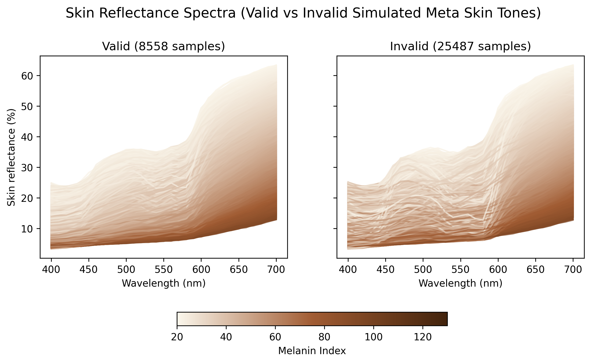
3 Create fake dataset
To evaluate the performance of the classifier, we construct two test datasets: a real test dataset and a synthetic (fake) test dataset. The real test dataset is obtained by randomly sampling spectra from the ISSA dataset. The synthetic test dataset is generated by perturbing samples from the real test dataset with smooth random noise. Specifically, for a real reflectance spectrum \(f_{real}\), we define the corresponding fake spectrum \(f_{fake}\) as \[f_{fake} = f_{real} + Z + \epsilon, \quad \epsilon \sim N(0, \sigma^2), ~ Z \sim \mathcal{GP}(0, \mathcal{K}),\] where \(\epsilon\) represents the global shift, and the Gaussian process \(Z\) introduces locally smooth random perturbations. In this experiment, we set \(\sigma^2=8\) and \[\mathcal{K}(w_1,w_2)=4\exp(-0.5\cdot\frac{||w_1-w_2||^2}{20^2}).\] Finally, we truncate \(f_{fake}\) at zero to ensure that all reflectance values are non-negative.
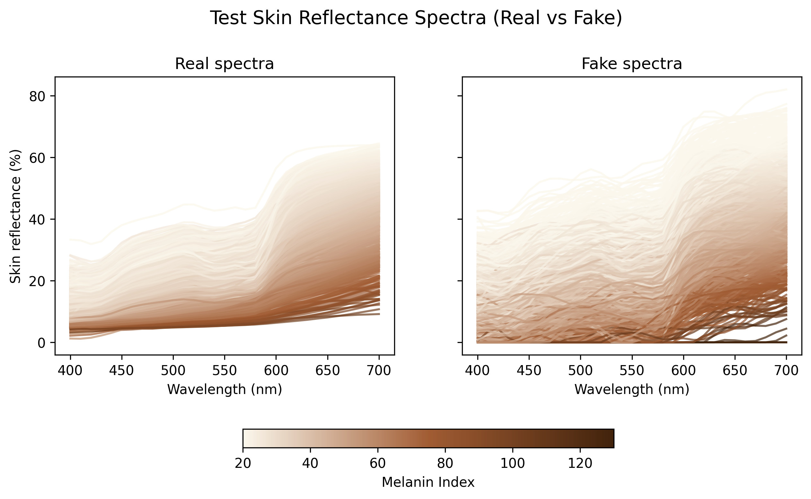
3.1 Challenge
Due to the absence of gold-standard test data for model evaluation, we have to synthesize artificial reflectance spectra. However, this synthetic data may differ significantly from the actual simulated data. As a result, a filter that performs well on our synthetic test set might still struggle to separate realistic from unrealistic reflectance spectra within the Meta simulated dataset.
3.2 Model Validation
Number of valid ISSA test spectra after filtering: 1470 out of 1607
True positive rate on ISSA test spectra: 0.9147
Number of valid fake test spectra after filtering: 459 out of 1607
False positive rate on fake test spectra: 0.2856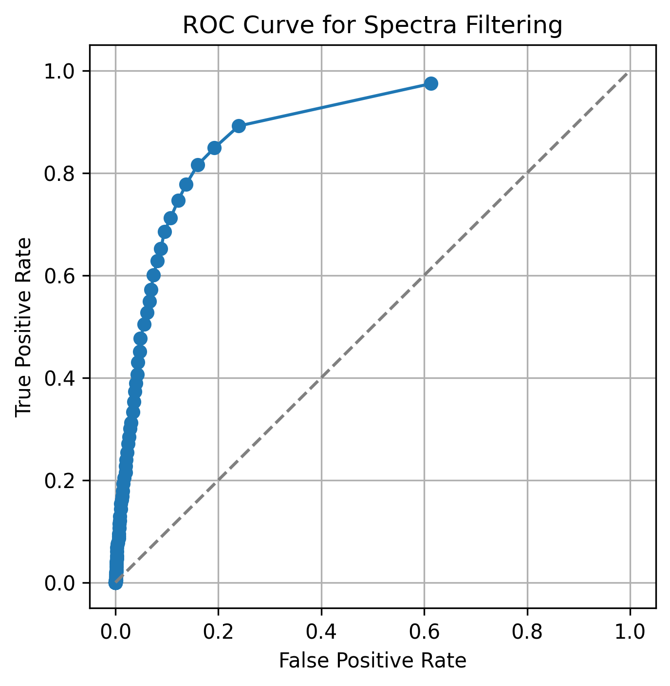
4 First derivative calculation
The first derivative of skin reflectance provides a measure for the velocity, and then characterizes the shape of skin reflectance spectra.
The first derivatives of ISSA and full Meta simulated reflectance spectra are illustrated below:
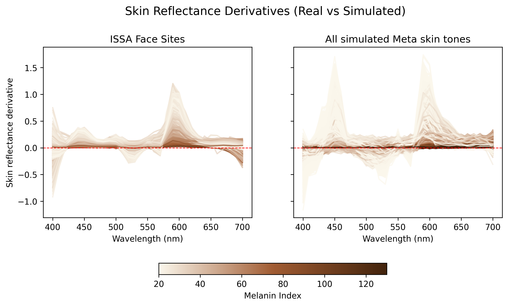
The first derivatives of ISSA and valid simulated reflectance spectra are illustrated below:
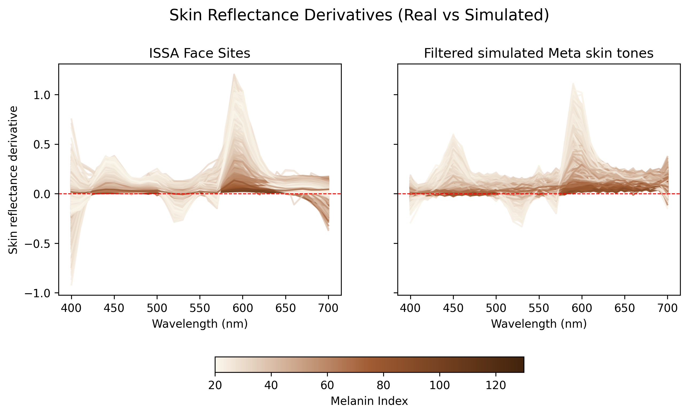
5 PCA and UMAP
5.1 Raw Reflectance Spectra
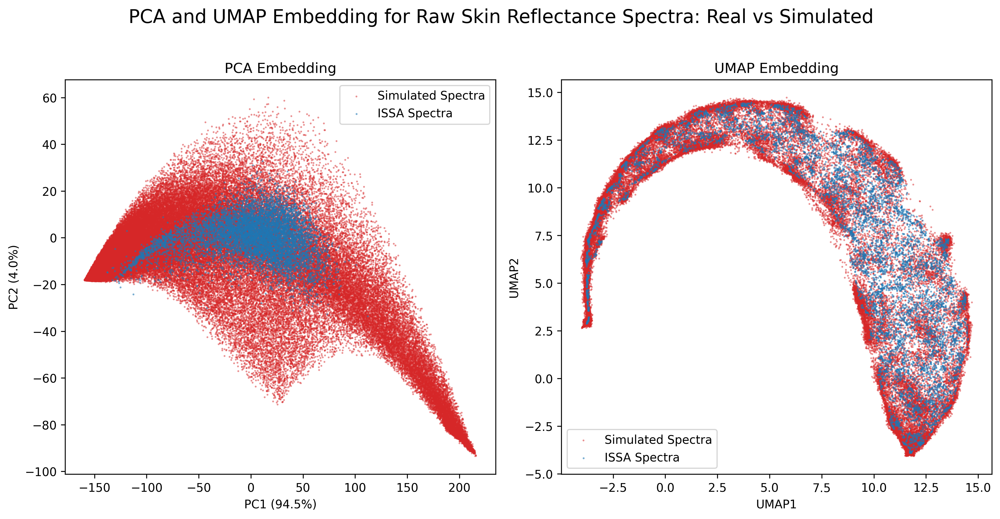
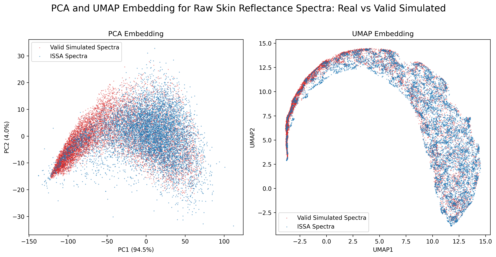
5.2 First Derivative
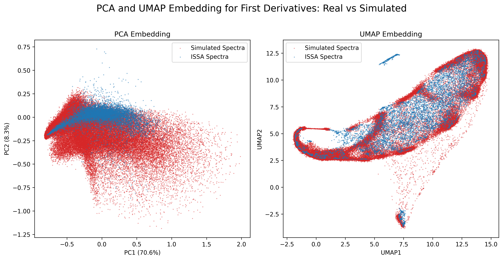
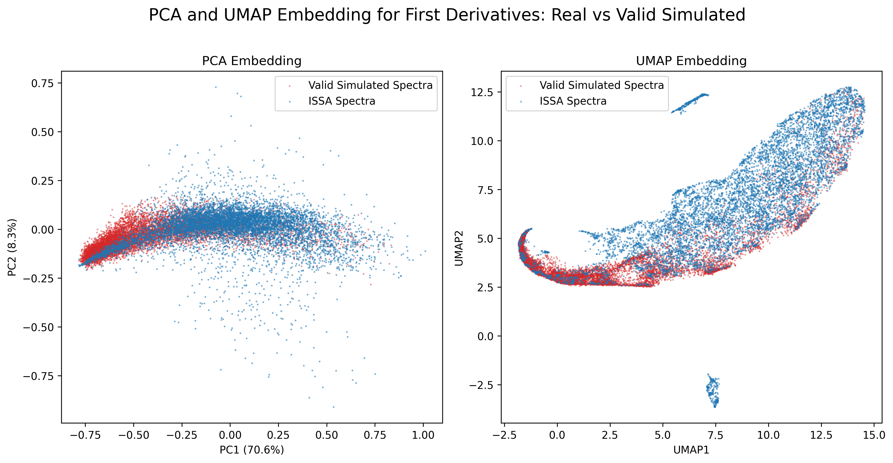
6 Gaussian mixture model on PCA embedding
We apply PCA to both the raw reflectance spectra and their first derivatives to reduce dimensionality before estimating the distribution of the resulting embeddings. The overall procedure is summarized below.
- Compute the PCA embedding.
- Apply PCA to the original spectra and their derivatives to obtain a low-dimensional representation for subsequent modeling.
- Model the distribution of the embeddings using a Gaussian mixture.
- We assume that the PCA embeddings arise from a finite mixture of Gaussian distributions and fit a Gaussian mixture model (GMM) to the embeddings from real skin tones. Each mixture component is thus interpreted as a Gaussian cluster.
- Construct cluster-wise confidence regions.
- For each cluster characterized by a Gaussian distribution \(N(\mu,\Sigma)\), we can construct a \((1-\alpha)\times100\%\) confidence region using Mahalanobis distance. Specifically, for a random variable \(X\sim N(\mu,\Sigma)\), \[(X-\mu)^\top \Sigma^{-1} (X-\mu)\sim \mathcal{X}_p^2.\] Let \(\mathcal{X}_{p, 1-\alpha}^2\) denote the \((1-\alpha)\)-quantile of the chi-squared distribution with \(p\) degrees of freedom. The corresponding ellipsoidal region is \[\{x \in \mathbb{R}^p \mid (x-\mu)^\top \Sigma^{-1} (x-\mu) \leq \mathcal{X}_{p, 1-\alpha}^2\}.\]
- Form the global confidence region and filter spectra.
- The overall confidence region is obtained as the union of the ellipsoidal regions across all clusters. A new skin reflectance curve is flagged as unrealistic if its PCA embedding falls outside this global region.
6.1 Raw reflectance spectra
6.1.1 An illustrative example with 2 PCs and 5 GMM components
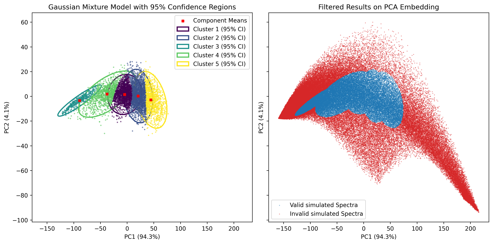
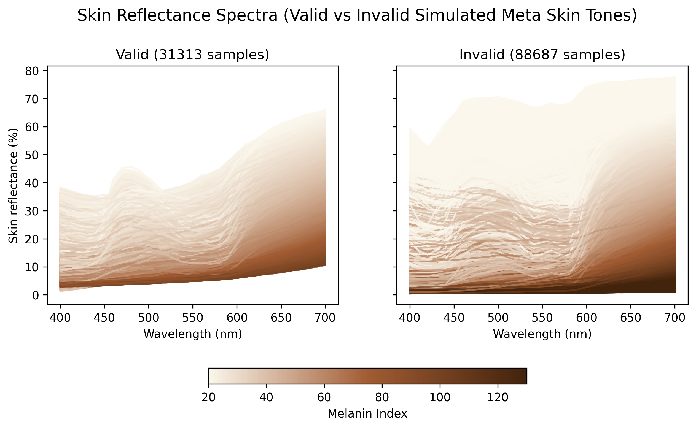
6.1.2 Model performance comparison with varying PCA components
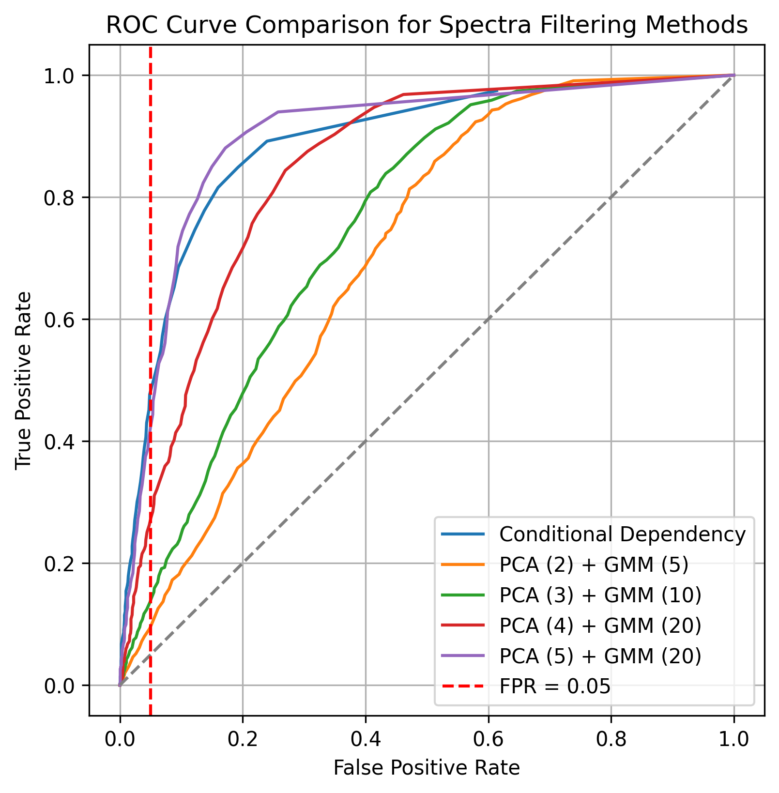
6.2 First derivative
6.2.1 An illustrative example with 2 PCs and 5 GMM components
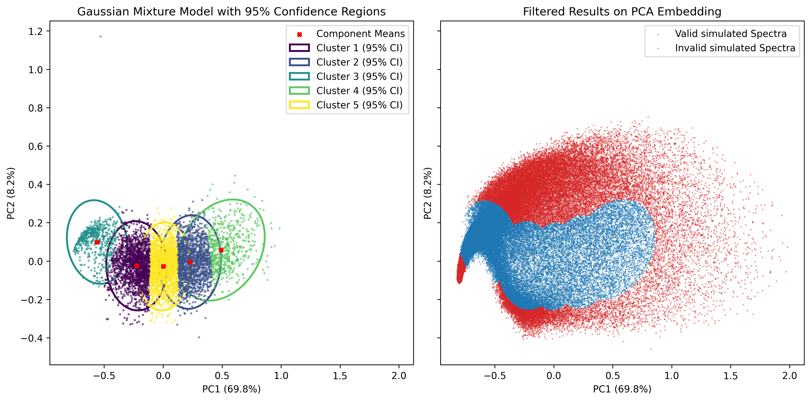
6.2.2 Model performance comparison with varying PCA components
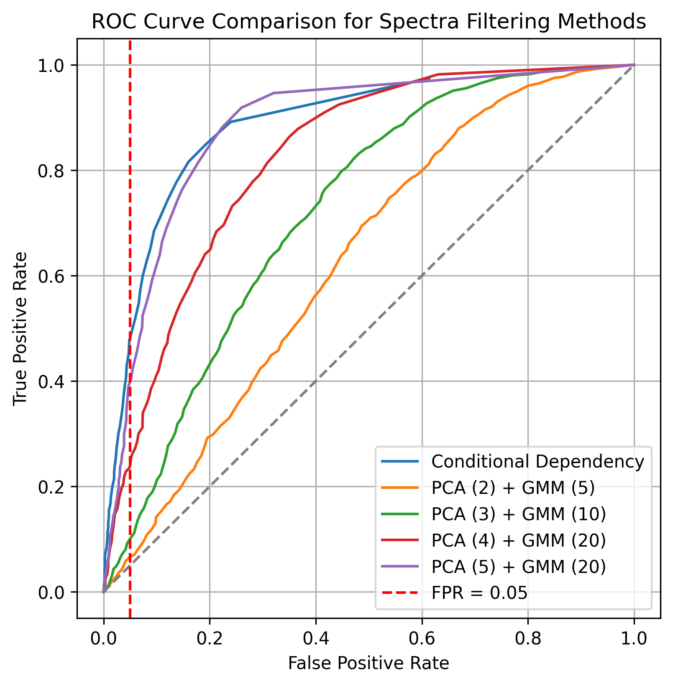